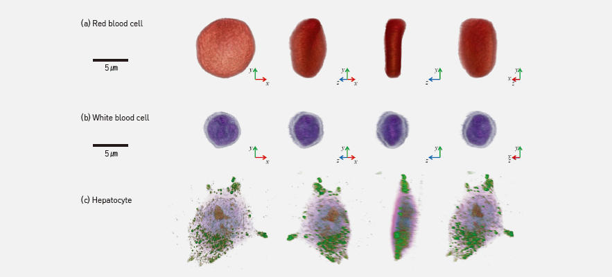

주제별 연구성과
주제별 연구성과
KAIST RESEARCH ACHIEVEMENTS
세포를 입체적으로 찍는
3차원 홀로그래픽 현미경
물리학과 박용근
요약
세포의 3차원 영상을 측정하는 것은 생명과학, 의학 연구에 필수적이다. 하지만 기존 기술은 세포를 형광 물질 등으로 염색해야 효과적으로 3차원 영상 획득이 가능했으나, 염색 과정으로 인해 살아있는 세포를 관찰하기 어려웠으며, 특히 체내에 다시 주입 해야 하는 면역세포나 줄기세포 등에는 적용이 원천적으로 불가능했다. 박용근 교수는 디지털 홀로그래피 기술을 이용해서, CT 촬영의 원리를 레이저로 현미경 수준에서 구현한다. 이를 통해, 염색 과정 없이 살아있는 세포 그대로 3차원 영상을 측정하고 세포 내부를 관찰 할 수 있게 해 준다. KAIST창업원의 EndRun 프로젝트의 지원을 받아 창업, 2016초 상업화에 성공하여 제품을 출시 하였다. 2016/11월 현재 전세계 10여 개국의 판매망을 설립, 해외 수출을 시작하였으며, 현재 MIT, 피츠버그의대, 독일암센터, 서울대 아산병원 등에서 제품을 활용 중이다.
연구배경
세포의 3차원 영상을 측정하는 것은 생명과학, 의학 연구에 필수적이다. 하지만 기존 기술은 세포를 형광 물질 등으로 염색해야 효과적으로 3차원 영상 획득이 가능했으나, 염색과정으로 인해 살아있는 세포를 관찰하기 어려웠으며, 특히 체내에 다시 주입해야 하는 면역세포나 줄기세포 등에는 적용이 원천적으로 불가능했다. 박용근 교수는 디지털 홀로그래피 기술을 이용해서, CT촬영의 원리를 레이저로 현미경 수준에서 구현한다. 이를 통해, 염색 과정 없이 살아 있는 세포 그대로 3차원 영상을 측정하고 세포 내부를 관찰할 수 있게 해 준다.
자구벽 메모리의 핵심 동작원리는, 하드디스크의 기계적인 회전을 전류에 의한 자구벽 이동으로 대체하는 것이다 (다음 페이지 그림 참조). 자성 나노선을 사용함으로써 비휘발성 특성을 확보하고, 기계적인 회전을 없앰으로써 전력 사용량을 줄이고 충격에 강한 메모리를 만들겠다는 아이디어를 기반으로 한다. 따라서, 고속 동작만 가능하다면, 기존의 메모리의 장점을 모두 가지는 새로운 메모리가 될 것으로 기대를 받고 있다. 현재까지 연구 결과, 자구벽 메모리의 속도는 수백 m/s정도의 한계를 가진다는 것이 보고되었다. 이는 자구벽이 이동할 때, 회전하면서 이동하게 되는 워커붕괴현상(Walker breakdown)이 근원적인 원인이 된다. 이러한 워커붕괴현상은 자성물질이 본질적으로 가지게 되는 각운동량에 기인하기 때문에 피할 수 없는 현상으로 알려져 왔다. 자구벽 메모리 소자의 초고속 동작에 있어서, 워커붕괴 현상은 치명적인 약점으로 작용하기 때문에 이를 극복하기 위한 해결방안이 필요하였다.
 개발된 3차원 홀로그래피 현미경 제품 사진과 사양
개발된 3차원 홀로그래피 현미경 제품 사진과 사양
연구내용
CT촬영과 동일한 원리를 현미경에서 구현하였다. 다만, 차이는 CT는 X-ray의 흡수차이를 이용하며, 환자 등의 내부를 본다면, 이 제품은 laser를 이용하여 세포나 그 소기관의 밀도차에 의한 RI값을 이용하여 관찰할 수 있게 한다. 이러한 기술을 이용하여 염색 없이 세포의 3차원 영상구현이 매우 빠른 시간 안에 가능하다. Tomography 기술을 이용하여 살아있는 세포와 조직을 염색하지 않고, 실시간 3차원 영상을 매우 빠른 시간에 획득 가능하다. 기존 기술은 세포를 형광 물질 등으로 염색해야 효과적으로 3차원 영상 획득이 가능했으나, 염색 과정으로 인해 살아있는 세포를 관찰하기 어려웠으며, 특히 체내에 다시 주입해야 하는 면역세포나 줄기세포 등에는 적용이 원천적으로 불가능했다. 또한 밀도, 질량, 부피 등 여려가지 정량적인 data를 얻을 수 있기 때문에 나노과학, 세포 생물학, 미생물학, 질병진단등 여러분야에서 폭넓게 이용될 것으로 사료된다.
 개발된 현미경으로 측정한 다양한 세포 의 3차원 영상(적혈구, 백혈구, 간세포)
우수성과 및 기대효과
- 소프트뱅크 등으로부터 약 30억원 투자 유치
- 2016 10대 기계기술 선정, 대한기계학회(2016/11)
- 본 솔루션은 디지털 홀로그래피 기술을 기반으로 개발된 것으로 국내외 5개의 특허 출원 및 등
- 생체세포를 염색없이 2D, 3D, 4D로 실시간 관찰가능, 기존 광학현미경 사용 환경에 호환되도록 제작되어 손쉽게 세포를 관찰하고 정량화(quantification) 가능
- 기존 세포를 관찰 시 생체세포가 투명하고 작아 생명을 유지하기 어려웠음, 그러나 본 제품 개발을 통해 그동안 관찰이 불가능했던 세포의 물리적인 현상을 손쉽게 이해 가능
- 신약개발 및 새로운 질병진단, 치료법 발굴에 획기적 발전이 가능해질 것으로 기대
참고자료
[기사1] Holotomography Unlocks New Potential for Life Sciences Research, Photonics MEDIA, http://www.photonics.com/Article.aspx?AID=60967